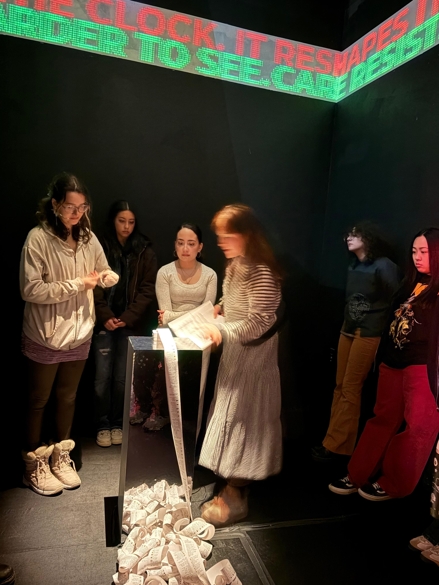
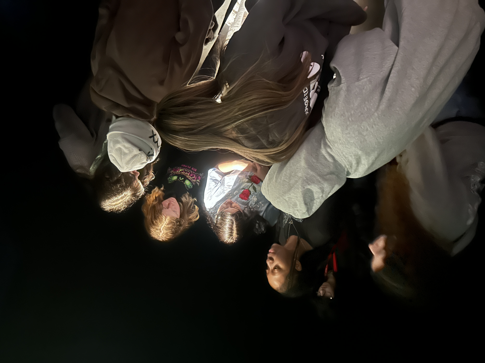
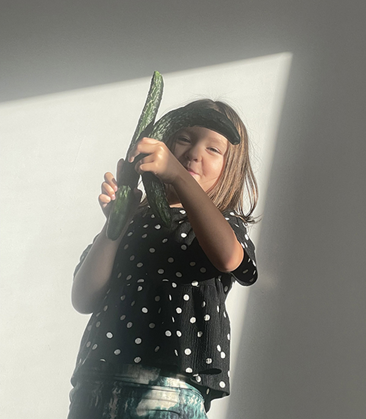
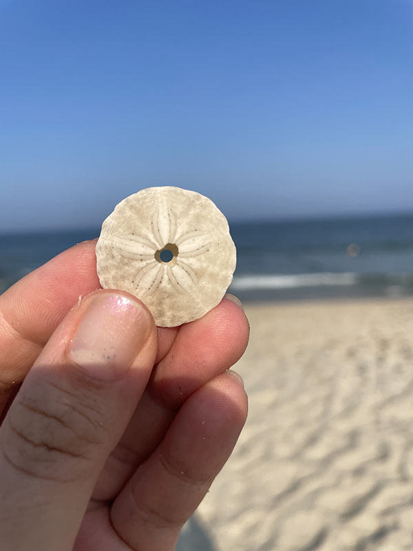

"Learn something. Apply it.
Pass it on so it is not forgotten."
— Ruth Asawa, American modernist artist
I discovered teaching only recently, and when I began my MFA, I never imagined that I would step into this role. For years, I believed that guiding others required an expertise I did not possess, a level of authority I could not claim. Teaching seemed distant from my personal path, something reserved for those who had mastered knowledge rather than those still in pursuit of it. Yet, the moment I began sharing my own experiences, I realized that teaching is not about possessing all the answers—it is about facilitating exploration, encouraging curiosity, and creating a space where knowledge is co-constructed.
What I have come to understand is that teaching is fundamentally a shared experience. I offer what I know, guiding students through a structured workflow, yet I am constantly learning from them in return. Each class is a dialogue, an exchange in which their questions, interpretations, and perspectives illuminate corners of knowledge I had not anticipated. Preparing lessons forces me to revisit ideas I had forgotten, to reexamine techniques, and to synthesize insights from my own artistic practice. In this way, teaching transforms the act of instruction into an active process of rediscovery and reflection.
Observation and wonder are at the heart of learning, and teaching has heightened my awareness of the world around me. I notice patterns in the most ordinary objects: a cucumber suggesting the letter “K,” a seashell revealing a singular, repetitive design. Sharing these discoveries with students becomes a collaborative investigation, a way of seeing and thinking together. Each revelation, however small, contributes to a larger rhythm of learning, underscoring the reality that knowledge is not a solitary pursuit but a continuous, collective journey.
It was this recognition of shared learning that motivated me to return to graduate school after ten years in industry. I realized that growth requires constant engagement, experimentation, and reflection. Teaching and learning are inseparable: in teaching, I refine my understanding; in learning, I find the energy and insight to teach more effectively. Every day in the classroom reaffirms my conviction that human beings are inherently observers and learners, and that education, at its best, is a collaborative process of discovery, imagination, and connection. I teach because I am learning, and I am learning because I teach.



